들어가며
지난 강의에서는 시계열 예측의 고전적 방법론들 — 선형 회귀(Linear Regression), ARIMA, 상태 공간 모델(State Space Model, SSM) — 을 살펴보았습니다. 이번 강의에서는 이 흐름을 심층 신경망으로 자연스럽게 확장합니다. 구체적으로 세 가지 주제를 다룹니다.
- 순환 신경망(Recurrent Neural Networks, RNN): SSM의 선형 상태 전이를 신경망으로 일반화
- 확률적 예측(Probabilistic Forecasting): 단일 점 예측을 넘어 미래 값의 분포를 추정
- 최대우도추정(Maximum Likelihood Estimation, MLE): 분포 기반 모델의 학습 원리
1. 순환 신경망 (Recurrent Neural Networks)
복습: 선형 회귀와 MLP
선형 회귀는 단일 뉴런이다
이전 강의에서 배운 선형 회귀는 신경망의 관점에서 보면 단 하나의 뉴런(single neuron)에 불과합니다. 입력 특성 벡터 \(\mathbf{x}_t\)와 가중치 벡터 \(\mathbf{w}\), 편향 \(b\)를 이용해 시점 \(t\)의 예측값을 다음과 같이 계산합니다.
\[\hat{z}_t = \mathbf{w}^\top \mathbf{x}_t + b\]
이 구조에서 시계열의 각 시점 \(t\)마다 동일한 가중치를 공유하면서 독립적으로 예측을 수행합니다. 즉, 이전 시점의 정보는 명시적으로 활용되지 않습니다.
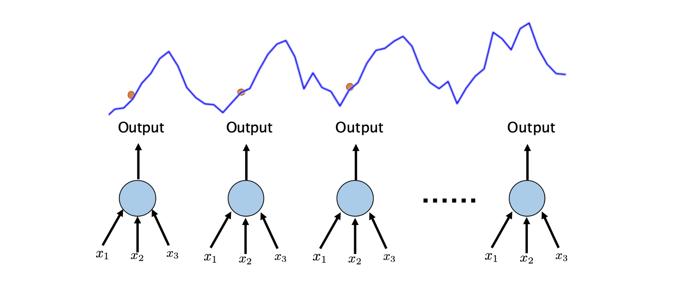
심층 신경망(MLP)으로의 일반화
선형 회귀를 일반화하면, 예측 함수 \(f\)를 임의의 복잡한 함수로 확장할 수 있습니다.
\[\hat{z}_t = f(\mathbf{x}_t)\]
이때 \(f\)를 여러 층의 비선형 변환으로 구성한 것이 다층 퍼셉트론(Multi-layer Perceptron, MLP) 입니다. \(l\)개의 레이어를 쌓으면 다음과 같이 표현됩니다.
\[z_t = \sigma\!\left(\mathbf{w}_l^\top\!\left(\sigma\!\left(W_{l-1}^\top\!\left(\sigma\!\left(W_{l-2}^\top\!\left(\cdots W_0^\top \mathbf{x}_t\right)\right)\right)\right)\right)\right) := \text{DEEP-NET}(\mathbf{x}_t)\]
여기서 \(\sigma\)는 활성화 함수(예: ReLU, tanh)이며, 각 층이 비선형 변환을 누적적으로 쌓아 복잡한 함수 관계를 근사합니다.
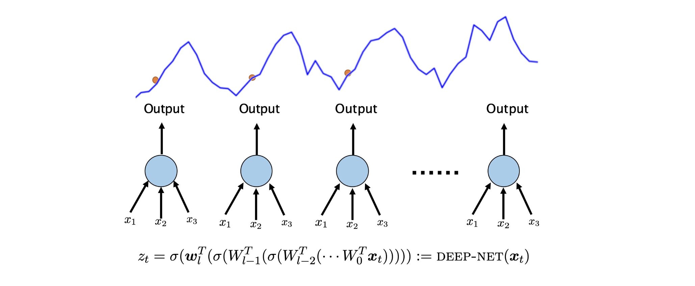
MLP의 장단점
MLP는 선형 회귀보다 훨씬 복잡한 패턴을 학습할 수 있지만, 그만큼 대가도 따릅니다.
장점:
- 복잡한 비선형 관계를 직접 학습 가능
- 수동 피처 엔지니어링(manual feature engineering)의 필요성 감소
단점:
- 더 많은 학습 데이터 필요
- 정규화(regularization) 등 세밀한 하이퍼파라미터 튜닝 필요
- 입력 스케일(scaling)에 민감
- 더 많은 연산 자원과 시간 소요
SSM에서 RNN으로 — 동기와 구조
상태 공간 모델(SSM)을 신경망으로 확장하는 아이디어
지난 강의에서 배운 SSM은 다음과 같은 선형 상태 전이를 사용합니다.
\[l_t = l_{t-1} + \alpha \cdot \epsilon_t\] \[z_t = \mathbf{v}^\top l_t + \mathbf{w}^\top \mathbf{x}_t + \epsilon_t\]
상태 벡터 \(l_t\)가 이전 상태 \(l_{t-1}\)로부터 선형 변환을 통해 업데이트됩니다. 여기서 자연스러운 질문이 생깁니다.
“선형 회귀를 MLP로 일반화했듯이, SSM도 심층 신경망으로 일반화할 수 있지 않을까?”
이것이 바로 순환 신경망(RNN)의 출발점입니다.
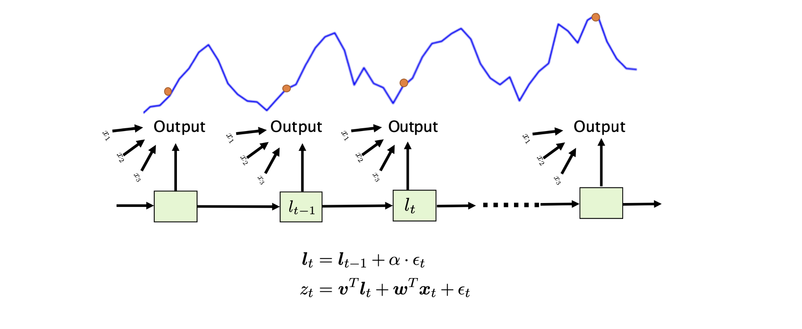
순환 신경망(RNN)의 정의
RNN은 SSM의 선형 상태 전이를 비선형 함수로 대체합니다. 현재 은닉 상태(hidden state) \(\mathbf{h}_t\)는 다음 세 가지에 의해 결정됩니다.
- 이전 은닉 상태 \(\mathbf{h}_{t-1}\)
- 현재 입력 \(\mathbf{x}_t\)
- 활성화 함수 \(\sigma\)
\[\mathbf{h}_t = \sigma(\theta_0 h_{t-1} + \theta_1 x_t)\] \[z_t = \sigma(\theta h_t)\]
\(z_t\)는 은닉 상태 \(\mathbf{h}_t\)에 비선형 함수를 적용하여 생성됩니다.
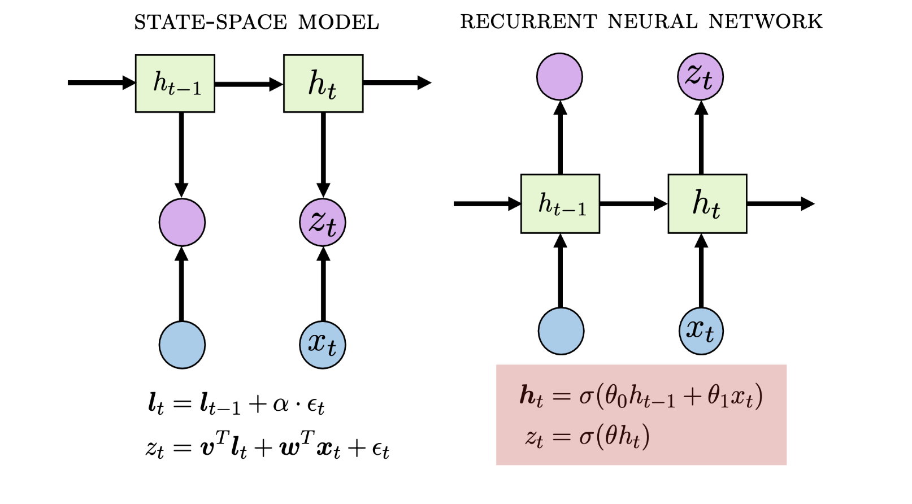
상태 전이를 레이어로 보기 (State Transition as Layers)
RNN의 각 셀(cell)은 MLP의 하나의 레이어와 대응됩니다. 시퀀스의 각 시점에서 활성화 함수가 적용되어 비선형성이 시간 방향으로 누적됩니다.
장점 (Pro):
- 강한 표현력(expressive power): 시퀀스가 진행될수록 은닉 상태가 점점 더 풍부한 정보를 담습니다. 긴 시계열의 복잡한 패턴도 포착할 수 있습니다.
단점 (Con):
- 학습 불안정성: 시퀀스 길이만큼 레이어가 쌓이는 것과 같아, 역전파(backpropagation) 경로가 매우 길어집니다. 이로 인해 그래디언트 소실(vanishing gradient) 이나 그래디언트 폭발(exploding gradient) 문제가 발생하여 학습이 불안정해집니다. 특히 시퀀스 길이가 길수록 이 문제가 심각해집니다.
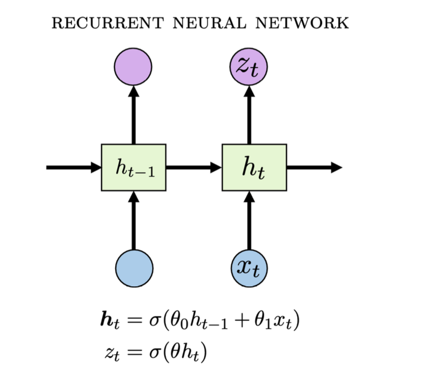
Projection Head
RNN을 실제 예측 태스크에 활용하는 방법을 살펴보겠습니다.
입력 시계열 \(\mathbf{x} = (x_1, \cdots, x_t)\)를 RNN에 입력하면, 크기 \(t \times h\)의 은닉 상태 행렬 \(\mathbf{H} = \text{RNN}(\mathbf{x})\)가 생성됩니다. 여기서 \(h\)는 하이퍼파라미터인 은닉 차원(hidden dimension)입니다.
일반적으로 마지막 상태 \(z_t\)만을 활용합니다. 마지막 상태가 전체 시계열의 요약 정보를 가장 잘 담고 있기 때문입니다.
마지막으로, projection head를 붙여 최종 예측값을 계산합니다.
\[y = \mathbf{w}^\top z_t\]
이는 MLP의 단일 뉴런(선형 매핑)에 해당하며, RNN 인코더가 생성한 표현을 최종 예측값으로 변환합니다.
2. 확률적 예측 (Probabilistic Forecasting)
확률적 예측이란?
지금까지 다룬 모델들은 모두 점 예측(point prediction) \(\hat{z}_t\)를 출력했습니다. 그러나 현실의 예측 문제에서는 단일 예측값만으로는 불충분합니다. 미래의 불확실성을 정량화하는 것이 매우 중요합니다.
확률적 예측(Probabilistic Forecasting)의 목표는 단일 예측값이 아니라, 미래 값의 분포 \(P(z_t)\)를 추정하는 것입니다. 이는 다음과 같은 실용적 이점을 제공합니다.
- 예측의 불확실성(uncertainty) 정량화
- 리스크 관리 및 의사결정 지원 (예: “90% 확률로 수요가 X 이하일 것”)
- 이상값(extreme value) 발생 가능성 평가
아래에서는 설명의 단순화를 위해 1단계 예측(one-step-ahead prediction, \(h=1\))을 가정합니다.
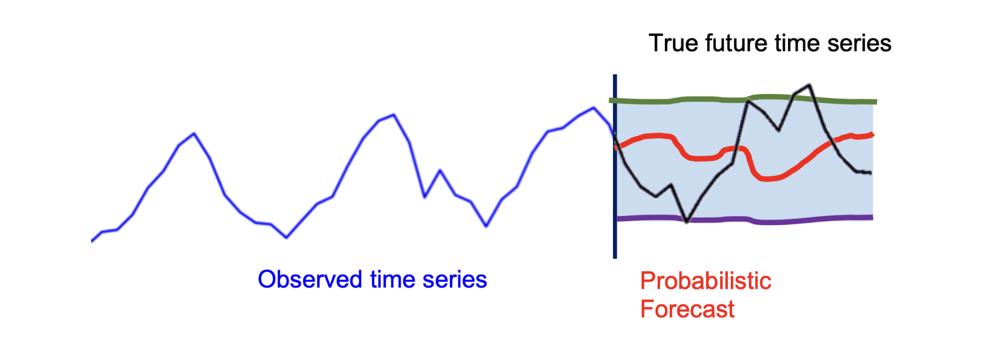
인코더와 Projection Head의 역할
RNN을 포함한 모든 심층 신경망은 크게 두 부분으로 구성됩니다.
- 인코더(Encoder): 입력 \(\mathbf{x}_t\)를 처리하여 표현 벡터(representation) \(\mathbf{h}\)를 생성합니다. 마지막(penultimate) 레이어까지의 모든 연산을 포함합니다.
- Projection Head: \(\mathbf{h}\)를 최종 예측값으로 변환합니다. 전형적으로 선형 매핑 \(\hat{\mathbf{y}} = W\mathbf{h} + \mathbf{b}\)을 사용합니다.
확률적 예측을 위해서는 projection head만 수정하여 \(P(z_t | \mathbf{h}_t)\)를 모델링합니다. 인코더 전체를 수정하는 것보다 훨씬 효율적인 방법입니다.
두 가지 주요 접근 방법이 있습니다.
- 분위수 회귀(Quantile Regression): 다양한 분위수에 대한 예측값을 직접 생성
- 모수적 분포(Parametric Distribution): 데이터 분포를 명시적으로 가정하고 그 모수를 예측
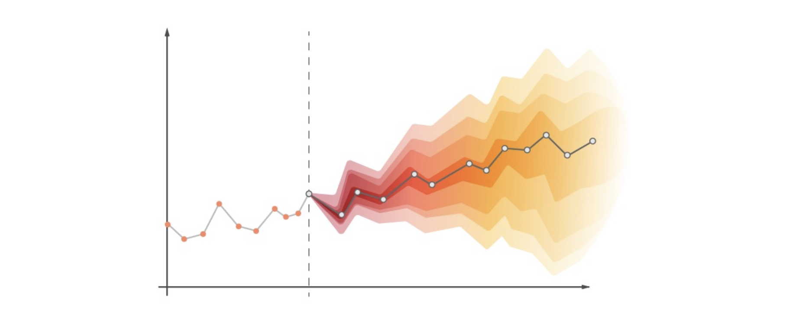
접근 방법 1: 분위수 회귀 (Quantile Regression)
분위수의 정의와 해석
분위수 회귀의 핵심 아이디어는 다양한 신뢰 수준(confidence level)의 예측값을 동시에 생성하는 것입니다.
\(Px\) 예측값 \(\hat{z}_t^x\) 는 “\(z_t \leq \hat{z}_t\)가 전체 시간의 \(x\%\)에서 성립한다”는 의미입니다. 즉:
- P50 예측: 50%의 시간에서 \(z_t \leq \hat{z}_t\) → 중앙값(median)
- P90 예측: 90%의 시간에서 \(z_t \leq \hat{z}_t\) → 상위 90번째 백분위수
분위 수준의 순서도 보존되어야 합니다: \(a < b\)이면 \(\hat{z}_t^a < \hat{z}_t^b\).
주의: \(\hat{z}_t^{0.5}\)는 중앙값(median)이지, 최빈값(mode)이나 평균(mean)이 아닙니다.
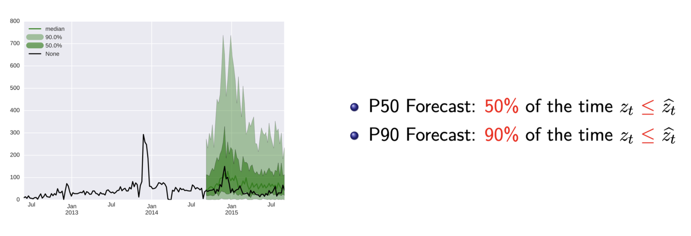
다중 Projection Head
각 분위수 \(q\)에 대해 별도의 projection head를 사용합니다. 인코더는 공유하되, 분위수별로 서로 다른 선형 매핑 \(\mathbf{w}_q\)를 적용합니다.
\[\hat{z}_t^q = \mathbf{w}_q^\top \mathbf{h}_t \quad \text{for } q \in \{0.01,\, 0.1,\, 0.3,\, \ldots\}\]

분위수 손실 함수 (Quantile Loss / Pinball Loss)
모델은 다음 목적 함수를 최소화하도록 학습합니다.
\[\mathcal{L}(\theta) = \sum_q \text{loss}_q(\hat{z}_t^q)\]
각 분위수에 대한 손실은 비대칭 손실(asymmetric loss) — 또는 핀볼 손실(pinball loss) — 으로 정의됩니다.
\[\text{loss}_q(\hat{z}_t^q) = \begin{cases} q \cdot (z_t - \hat{z}_t^q) & \text{if } z_t > \hat{z}_t^q \quad \text{(실제값이 예측값보다 클 때)} \\[4pt] (1-q) \cdot (\hat{z}_t^q - z_t) & \text{if } z_t < \hat{z}_t^q \quad \text{(실제값이 예측값보다 작을 때)} \end{cases}\]
이 손실의 비대칭성이 핵심입니다.
- 낮은 분위수 (\(q\) 작음): 예측값이 실제값보다 낮을 때(과소 예측) 더 큰 페널티 → 예측값이 아래쪽으로 이동
- 높은 분위수 (\(q\) 큼): 예측값이 실제값보다 높을 때(과대 예측) 더 큰 페널티 → 예측값이 위쪽으로 이동
- \(q = 0.5\): 손실이 대칭 → 평균절대오차(MAE)와 수학적으로 동치
분위수 회귀의 장단점
장점:
- 데이터의 분포를 명시적으로 가정할 필요 없음 (distribution-free)
- 예측 결과가 직관적으로 해석 가능 (“X% 확률로 이 값 이하”)
단점:
- 분포의 연속적인 표현이 불가능 (이산적인 분위수만 출력)
- 부드러운 분포를 얻으려면 매우 많은 projection head 필요
접근 방법 2: 모수적 분포 (Parametric Distribution)
개념과 동기
모수적 분포 접근법의 핵심 아이디어는: \(P(z_t | \mathbf{h}_t)\)가 특정 잘 알려진 분포(예: 가우시안)를 따른다고 가정하고, 신경망이 그 분포의 모수(parameter)를 출력하도록 하는 것입니다.
즉, projection head는 예측값 자체가 아니라 분포의 모수를 반환합니다. 분포의 선택은 중요한 하이퍼파라미터입니다.

가우시안 분포 (Gaussian Distribution)
가장 널리 사용되는 선택지는 정규 분포(가우시안)입니다.
\[P(z_t|\mathbf{h}_t) = \mathcal{N}(z_t \mid \mu(\mathbf{h}_t),\, \sigma^2(\mathbf{h}_t))\]
가우시안의 확률밀도함수(PDF)는 다음과 같습니다.
\[f(x) = \frac{1}{\sqrt{2\pi\sigma^2}} \exp\!\left(-\frac{(x-\mu)^2}{2\sigma^2}\right)\]
우리의 목표는 인코딩된 표현 \(\mathbf{h}_t\)로부터 평균 \(\mu\)와 표준편차 \(\sigma\)를 예측하는 것입니다.
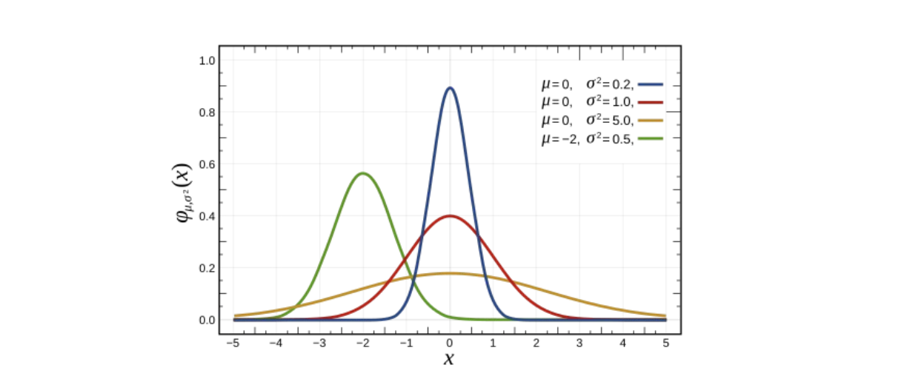
가우시안을 위한 Projection Head
가우시안 분포를 모델링하려면 두 개의 projection head가 필요합니다.
\[\text{P}(z_t | \mathbf{h}_t) = \mathcal{N}\!\left(z_t \mid \mu(\mathbf{h}_t),\, \sigma^2(\mathbf{h}_t)\right)\]
\[\mu(\mathbf{h}_t) = \mathbf{w}_\mu^\top \mathbf{h}_t \qquad \sigma(\mathbf{h}_t) = \text{softplus}(\mathbf{w}_\sigma^\top \mathbf{h}_t)\]
- \(\mu\)는 임의의 실수값을 가질 수 있으므로 선형 매핑을 그대로 사용합니다.
- \(\sigma\)는 반드시 양수여야 하므로 softplus 함수를 활용합니다.
\[\text{softplus}(x) = \log(1 + e^x)\]
softplus는 항상 양수이고, \(x \to +\infty\)이면 선형에 수렴하며, \(x \to -\infty\)이면 0에 근접합니다.
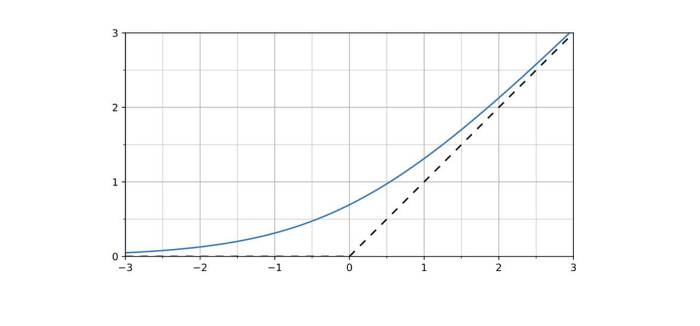
음이항 분포 (Negative Binomial Distribution)
가우시안 외에도 다양한 분포를 활용할 수 있습니다. 수요 예측처럼 양수 값을 다루는 경우에는 음이항 분포(Negative Binomial, NB)가 적합합니다.
\[\text{P}(z_t|\mathbf{h}_t) = \text{NB}\!\left(z_t \mid \mu(\mathbf{h}_t),\, \alpha(\mathbf{h}_t)\right)\]
\[\mu(\mathbf{h}_t) = \text{softplus}(\mathbf{w}_\mu^\top \mathbf{h}_t) \qquad \alpha(\mathbf{h}_t) = \text{softplus}(\mathbf{w}_\alpha^\top \mathbf{h}_t)\]
두 모수 모두 양수임을 보장하기 위해 softplus를 사용합니다. 음이항 분포는 양수 범위에 집중되며, 분산이 평균을 초과하는 과산포(overdispersion) 데이터에 특히 유용합니다.
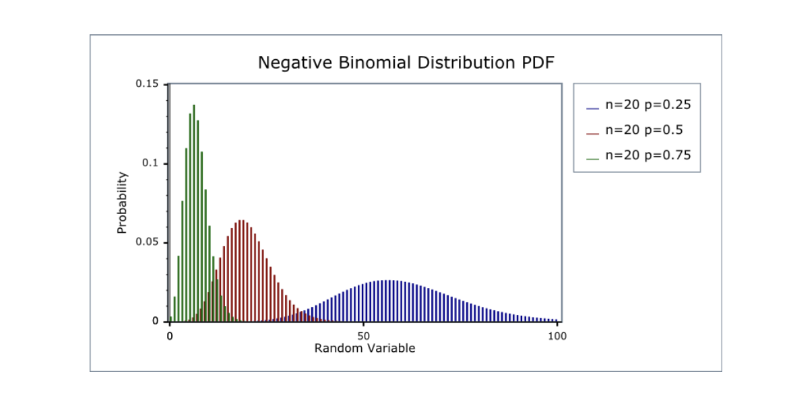
가우시안 혼합 모형 (Mixture of Gaussians)
여러 개의 가우시안 분포를 혼합한 가우시안 혼합 모형(Mixture of Gaussians, MoG)도 사용할 수 있습니다. 단일 분포로는 표현하기 어려운 다봉(multimodal) 분포를 포착할 수 있습니다.
\[\text{P}(z_t|\mathbf{h}_t) = \sum_{k=1}^K \pi_k\, \mathcal{N}(z_t \mid \mu_k(\mathbf{h}_t),\, \sigma_k^2(\mathbf{h}_t))\]
이를 위해 세 종류의 projection head가 필요합니다.
- 혼합 계수(mixture weights): \(\boldsymbol{\pi} = \text{softmax}(W_\pi \mathbf{h}_t)\) — 합이 1이 되도록 softmax 적용
- 각 가우시안의 평균: \(\mu_k(\mathbf{h}_t) = \mathbf{w}_{\mu_k}^\top \mathbf{h}_t\)
- 각 가우시안의 표준편차: \(\sigma_k(\mathbf{h}_t) = \text{softplus}(\mathbf{w}_{\sigma_k}^\top \mathbf{h}_t)\)
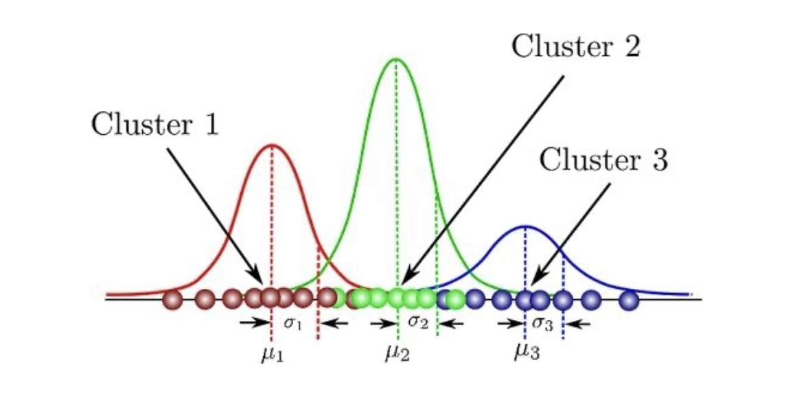
분포 선택의 중요성
어떤 분포를 선택하느냐는 매우 중요한 설계 결정입니다. 데이터의 실제 분포를 꼼꼼히 관찰해야 합니다.
예를 들어, 실제 판매 데이터에서는 98%의 값이 0인 롱테일 분포(long-tail distribution)가 나타날 수 있습니다. 이런 경우:
- 가우시안, 감마, 포아송 분포도 사용할 수 있지만
- 영 팽창 음이항 분포(Zero-inflated Negative Binomial, ZINB)가 더 적합합니다.
- 많은 0값을 자연스럽게 처리하면서, 양수 값에 대해서도 유연한 분포를 모델링하기 때문입니다.
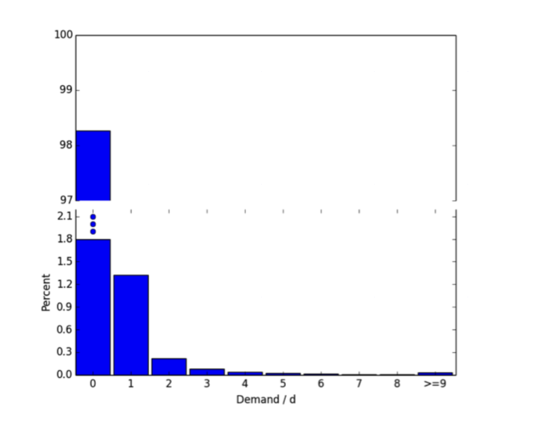
데이터 표준화에 대한 주의
실무에서 흔히 쓰이는 데이터 표준화(standardization) — 평균을 빼고 표준편차로 나누는 변환 — 은 데이터의 실제 분포 모양을 바꾸지 않습니다.
\[z_t \leftarrow \frac{z_t - \text{mean}(\cdot)}{\text{std}(\cdot)}\]
표준화 후 평균이 0이고 분산이 1이 되더라도, 원래 분포가 비대칭이거나 두꺼운 꼬리를 가지고 있다면 그 형태는 그대로 유지됩니다. 잘못된 표준화 방식은 올바른 분포 선택을 방해할 수 있습니다.
모수적 분포의 장단점
장점:
- 적절한 분포를 선택하면 분위수 회귀보다 더 좋은 성능 가능
- 분포가 닫힌 형태(closed-form)의 해를 지원 — 예: “최적 재고량은 얼마인가?” 같은 의사결정 문제에 직접 활용 가능
단점:
- 데이터의 분포를 명시적으로 가정해야 함 — 잘못된 가정은 성능 저하
- 분포가 시간에 따라 변하는 경우(non-stationary) 성능이 저하될 수 있음
3. 최대우도추정 (Maximum Likelihood Estimation)
MLE의 개념과 학습 절차
분포 기반 모델을 어떻게 학습시킬까요? 점 예측 모델은 MSE 같은 손실 함수를 최소화했지만, 확률 분포를 출력하는 모델에는 다른 학습 방법이 필요합니다. 그것이 바로 최대우도추정(Maximum Likelihood Estimation, MLE)입니다.
MLE의 학습 절차는 다음과 같습니다.
- Step 1: \(\mathbf{h}_t\)를 이용해 분포 \(P(z_t | \mathbf{h}_t)\)를 추정
- Step 2: 관측된 실제 값 \(z_t\)에 대한 우도(likelihood) \(\mathcal{L}(z_t)\)를 계산
- Step 3: \(\mathcal{L}(z_t)\)를 최대화하도록 모수(parameters) 업데이트
실제 사용하는 목적 함수의 구체적인 형태는 가정한 분포에 따라 달라집니다.
우도 (Likelihood)
데이터 집합 \(D\)와 모수화된 함수 \(f_\theta\)가 주어질 때, 우도(likelihood)는 조건부 확률 \(p(D|\theta)\)로 정의됩니다.
\[\mathcal{L}(\theta; D) = p(D|\theta)\]
우도가 높을수록 \(f_\theta\)가 데이터 \(D\)를 더 잘 설명한다는 의미입니다. 따라서 \(f_\theta\)의 학습은 \(p(D|\theta)\)를 증가시키는 방향으로 진행됩니다.
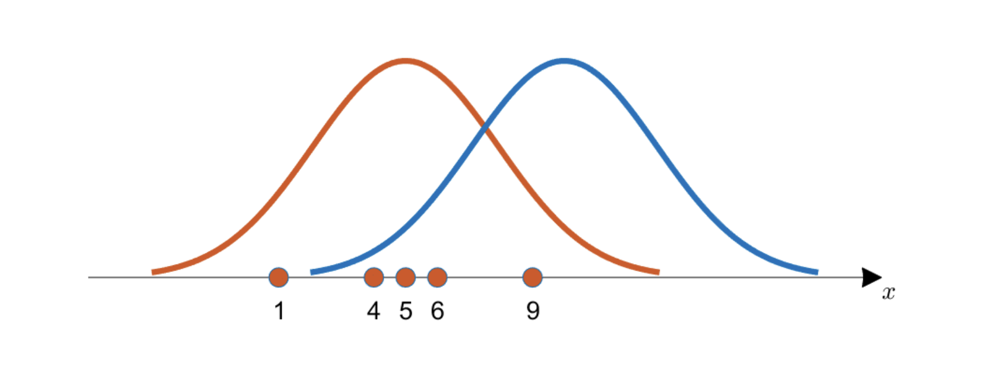
음의 로그 우도 (Negative Log Likelihood, NLL)
우도를 직접 최대화하는 것보다, 음의 로그 우도(NLL)를 최소화하는 것이 계산상 더 편리합니다.
유도 과정을 단계별로 살펴보겠습니다. 데이터 \(D\)의 각 샘플이 독립적으로 생성되었다고 가정합니다(i.i.d. 가정):
\[\theta^* = \underset{\theta}{\text{argmax}}\; p(D|\theta) \tag{우도 최대화 목표}\]
\[= \underset{\theta}{\text{argmax}}\; \prod_{d \in D} p(d|\theta) \tag{샘플 독립성 적용}\]
\[= \underset{\theta}{\text{argmax}}\; \sum_{d \in D} \log p(d|\theta) \tag{$\log\prod = \sum\log$ 성질 활용}\]
\[= \underset{\theta}{\text{argmin}}\; -\sum_{d \in D} \log p(d|\theta) \tag{최소화 손실로 변환}\]
이것이 바로 NLL 손실 함수입니다.
왜 로그를 취하는가? 두 가지 실용적 이유가 있습니다.
- 수치 안정성(numerical stability): 많은 작은 확률의 곱은 수치 언더플로(underflow)를 일으킬 수 있습니다. 로그를 취하면 곱이 합으로 변환되어 안전합니다.
- 계산 편의성: 지수 함수를 포함한 분포(가우시안 등)에서 로그가 깔끔히 정리됩니다.
가우시안 분포에서의 MLE
NLL 유도
가우시안 분포를 가정하면, \(\mu\)와 \(\sigma\)를 두 projection head로 예측합니다. 가우시안의 PDF는 우도 함수로도 쓰입니다.
\[p(z|\mu, \sigma) = \frac{1}{\sqrt{2\pi\sigma^2}} \exp\!\left(-\frac{(z-\mu)^2}{2\sigma^2}\right)\]
NLL을 단계별로 유도합니다.
\[-\log p(z|\mu, \sigma)\]
\[= -\log\!\left(\frac{1}{\sqrt{2\pi\sigma^2}}\right) + \left(-\log\exp\!\left(-\frac{(z-\mu)^2}{2\sigma^2}\right)\right)\]
\[= \frac{1}{2}\log(2\pi\sigma^2) + \frac{(z-\mu)^2}{2\sigma^2}\]
\[= \underbrace{\frac{(z-\mu)^2}{2\sigma^2}}_{\text{오차 항}} + \underbrace{\frac{1}{2}\log(2\pi\sigma^2)}_{c(\sigma)}\]
이 손실 함수의 두 항이 서로 어떻게 작동하는지 살펴보겠습니다.
오차 항 \(\frac{(z-\mu)^2}{2\sigma^2}\): 평균 \(\mu\)를 실제 관측값 \(z\) 방향으로 업데이트합니다. 예측 오차가 클수록 손실이 커집니다.
정규화 항 \(\frac{1}{2}\log(2\pi\sigma^2)\): 표준편차 \(\sigma\)에 대한 트레이드오프를 형성합니다.
- \(\sigma\)가 지나치게 클 경우, 이 항이 커져 페널티를 줍니다 → \(\sigma\)를 줄이도록 유도
- 그러나 오차가 작을 때 오차 항을 \(\sigma^2\)으로 나누면 손실이 작아지므로, \(\sigma\)를 줄이는 방향으로도 작동
결과적으로 \(\sigma\)는 실제 예측 오차에 비례하는 값으로 자연스럽게 수렴합니다.
고정 표준편차 → RMSE와의 동치 관계
만약 \(\sigma\)를 학습하지 않고 고정된 상수로 가정하면 어떻게 될까요?
정규화 항 \(\frac{1}{2}\log(2\pi\sigma^2)\)이 상수가 되어 모수 최적화에 영향을 주지 않으므로:
\[-\log p(z|\mu) \propto (z-\mu)^2\]
이는 RMSE(L2) 손실과 완전히 동치입니다!
\[\mathcal{L}_{\text{MSE}}(\mu; z) = (z - \mu)^2\]
핵심 통찰: 점 예측 모델을 MSE로 학습하는 것은, 가우시안 분포를 고정된 표준편차로 가정한 MLE와 수학적으로 동일합니다. 즉, 점 예측도 묵시적으로 가우시안 분포 가정을 내포하고 있는 셈입니다.
임의 태스크로의 일반화
MLE의 아이디어는 시계열 예측을 넘어 임의의 지도 학습 태스크에 적용됩니다.
- 기존 관점: \(f_\theta(\mathbf{x}) = \hat{y}\) — \(y\)에 대한 결정론적(deterministic) 예측
- 새로운 관점: \(f_\theta(\mathbf{x}) = p_\phi(\cdot | y)\) — \(y\)에 대한 확률 분포
모델 구조 자체는 동일하며, 해석 방식만 달라집니다.
회귀 예시: 사과 가격 예측
사과의 크기 \(X_1\)과 무게 \(X_2\)가 주어졌을 때 가격 \(y\)를 예측하는 문제를 생각해 봅시다.
왜 점 예측으로는 부족한가? 같은 크기와 무게의 사과라도 판매 장소, 계절, 공급 상황에 따라 가격이 다를 수 있습니다. 즉, \(y\)에 내재적 불확실성(aleatoric uncertainty)이 존재합니다. 따라서 오차를 0으로 만드는 것 자체가 불가능합니다.
대신 가우시안 분포 \(\mathcal{N}(\mu, \sigma)\)로 가격을 모델링합니다.
- \(f_\theta\)는 두 피처 \(X_1, X_2\)로부터 평균 \(\mu\)를 결정합니다 (MSE를 최소화하도록 학습).
- 불확실성 \(\sigma\)는 새로운 projection head로 추가 모델링할 수 있습니다.
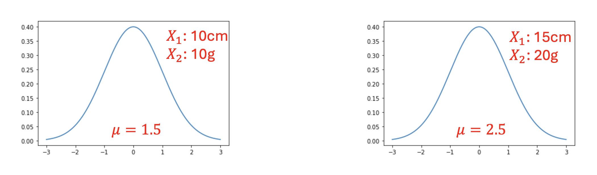
지수 분포와 새로운 목적 함수: 제주 감귤 예시
다른 예시로, 제주도에서 감귤의 가격을 예측해봅시다. 제주도에서는 감귤을 거의 공짜로 얻을 수 있어, 가격 \(y\)가 지수 분포(Exponential Distribution)를 따를 수 있습니다.
지수 분포의 PDF는 다음과 같습니다(\(y \geq 0\)으로 가정):
\[f(y; \lambda) = \lambda\, e^{-\lambda y}\]
평균은 \(\frac{1}{\lambda}\)이며, 이것이 유일한 모수입니다.
신경망이 평균 \(f_\theta(\mathbf{x}) = \frac{1}{\lambda}\)를 예측한다고 하면, NLL을 유도할 수 있습니다.
\[-\log f(y; \lambda) = -\log\left(\lambda\, e^{-\lambda y}\right) = -\log\lambda + \lambda y\]
\(\lambda = \frac{1}{f_\theta(\mathbf{x})}\)로 치환하면:
\[\mathcal{L}(\cdot) = \log f_\theta(\mathbf{x}) + \frac{y}{f_\theta(\mathbf{x})}\]
주목할 점은 이 손실 함수에는 “예측값과 실제값의 오차”라는 개념이 명시적으로 존재하지 않는다는 것입니다. 이는 지수 분포의 특성상 평균이 척도 모수(scale parameter)와 직접 연결되기 때문입니다.
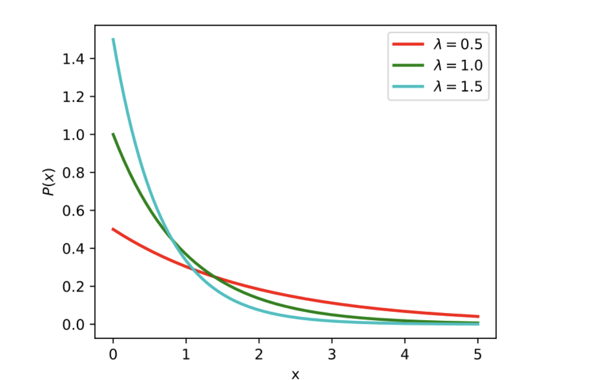
핵심 통찰: 사용하는 분포가 달라지면 손실 함수도 달라집니다. 가우시안 → MSE류 손실, 지수 분포 → 완전히 다른 형태의 손실. 이것이 분포 선택의 중요성을 보여주는 또 하나의 강력한 근거입니다.
마무리 요약
이번 강의에서는 세 가지 핵심 주제를 다루었습니다.
1. 순환 신경망 (RNN)
- 선형 회귀 → MLP, SSM → RNN으로의 자연스러운 일반화 흐름
- RNN은 비선형 활성화 함수 \(\sigma\)로 상태 전이를 수행하여 강한 표현력 확보
- 마지막 은닉 상태에 projection head를 붙여 예측 수행
- 단, 시퀀스가 길어지면 그래디언트 소실/폭발 문제가 발생할 수 있음
2. 확률적 예측 (Probabilistic Forecasting)
- 목표: 단일 점 예측 → 미래 분포 \(P(z_t|\mathbf{h}_t)\) 추정
- 분위수 회귀: 분포 가정 없이 다양한 신뢰 구간을 직접 예측 / 비대칭 핀볼 손실 사용 / 불연속적
- 모수적 분포: 가우시안, 음이항, MoG 등 분포를 직접 모델링 / 분포 선택이 핵심 / 닫힌 형태 해석 가능
3. 최대우도추정 (MLE)
- NLL로 분포 기반 모델 학습
- 가우시안 + 고정 \(\sigma\) → MSE(L2 손실)와 수학적으로 동치
- 분포에 따라 손실 함수 형태가 달라짐 — 지수 분포는 오차 기반 손실과 근본적으로 다른 형태
| 방법 | 가정 | 장점 | 단점 |
|---|---|---|---|
| 분위수 회귀 | 없음 | 직관적, distribution-free | 불연속, head 수 많음 |
| 모수적 분포 | 분포 형태 명시 | 성능↑, closed-form 해 | 잘못된 가정 시 성능↓ |
| 점 예측 (MSE) | 가우시안 + 고정 σ | 단순, 해석 쉬움 | 불확실성 정량화 불가 |